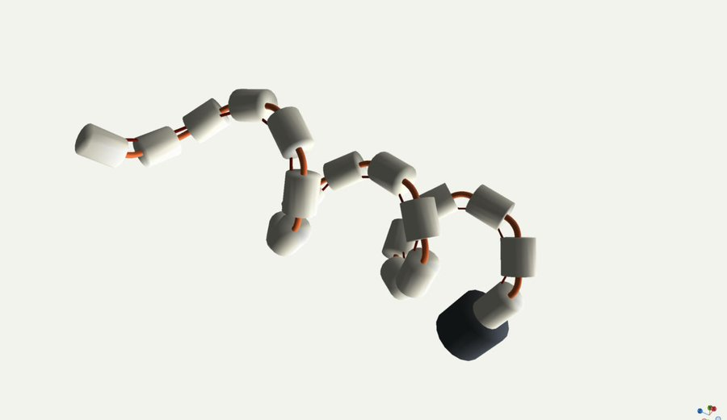
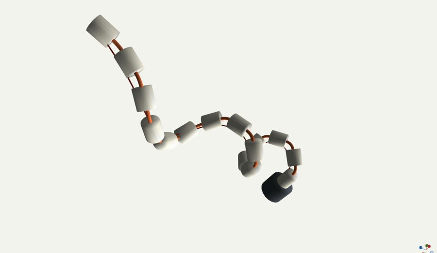
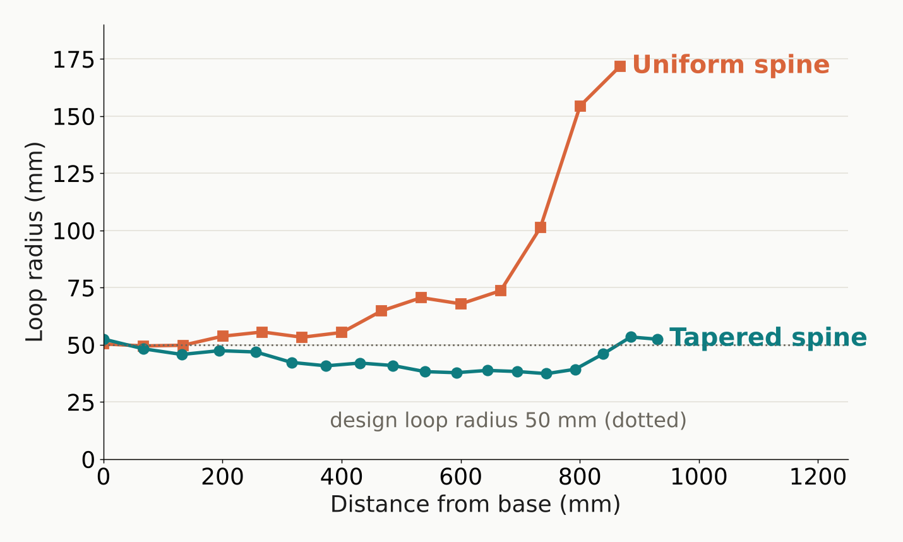

On-orbit servicing research at Carnegie Mellon University, funded by SURI
Capturing and detumbling a tumbling satellite
A failed satellite is often tumbling, and most were never built to be grabbed. Our CMU team built, in simulation, what a free-flying servicing robot needs to stop one: reach a moving grasp point, grasp it, and stop its spin. For the grasp we use Snaker, a snake robot that wraps around the satellite’s engine nozzle instead of pinching a single feature, and we’ve started building a tendon-driven Snaker in hardware. As a new master’s student, I worked on every stage.
- 99% of 200 randomized rendezvous trials reached the moving grasp point, up from 80%
- Up to 5× more misalignment tolerated by Snaker than by a standard gripper
- Even loops from our tapered tendon-driven gripper in SOFA, where a uniform one opened up toward the tip
What I worked on
- Rendezvous planning: extended the INSAT planner to moving targets and ran the randomized evaluation.
- Grasp and detumble control: a grasp controller, plus base and arm controllers that stop the spin within actuation limits.
- Snaker grasp analysis and caging: Snaker compared with a standard gripper, and a caging approach that tolerates perception error.
- Tendon-driven Snaker (very early stage): a first prototype with helical tendon routing, a tapered spine design so every loop bends equally, and SOFA simulations that test it.
Reaching a grasp point that won’t hold still
The servicer has to bring its gripper to a grasp point on the tumbling satellite on time, without hitting the satellite’s body or solar panels. We extended INSAT, a planner that interleaves graph search with trajectory optimization, to moving targets by giving it a space-time graph of where the satellite will be. When early paths arrived too late, a denser graph fixed nearly all of them.
Grasping it and stopping the spin
A grasp controller closes the gripper on the target. Then the servicer’s base and arm push against the target’s spin together, within their actuation limits and without letting the servicer itself turn too far. With a standard gripper, most failures on the harder cases came from an imperfectly aligned grasp slipping, which is what led us to Snaker.
Snaker: wrap instead of pinch
Snaker is a snake robot mounted on the servicer’s arm. Instead of pinching one feature, it wraps one the satellite already has, like its engine nozzle, spreading contact over many points. It first forms a loose helical cage the nozzle can’t escape, which made the grasp robust to perception error in simulation. Compared with a standard gripper, it tolerates more misalignment and resists the spin about every axis.
Very early stage
Tendon-driven Snaker: first hardware
In simulation, each of Snaker’s joints has its own actuator. The hardware Snaker is tendon-driven instead: the motor stays at the base, and one tendon threaded through every link coils the whole body into a helix around the target. Friction at every hole weakens that pull toward the tip, so the design tapers: the spine, the links, and their spacing all shrink toward the tip, so each section bends as much as the base does.
First prototype, and the problems we fixed
Our first 3D-printed prototype is simpler than the full design: links on a flexible TPU spine, with one tendon that steps one hole further around at each link, so a single pull coils the body into a helix. Pulled by hand, it wraps a 3D-printed nozzle at many points. These tests are qualitative; we haven’t measured grip force yet.
- Fixed: the links used to twist about the spine’s axis, and the tendon rubbed hard at the edges of its channels. Both are resolved in the current links.
- Still open: the gripper droops under its own weight, and its loops come out tight at the base and open at the tip, because friction at every hole weakens the pull toward the tip.
The tapered design, tested in SOFA
To even out the loops, the spine, the links, and their spacing all taper toward the tip, so each section gets softer exactly as fast as the pull fades; the size follows the cube root of the remaining pull. For the droop, we designed an elastic meshed shell between the links. We modelled the full 1 m, 18-link gripper in SOFA with its SoftRobots plugin, giving a tapered and a uniform spine the same 12 N pull and the same friction.



Result. Along the tapered gripper the loops stay between 37 and 53 mm, close to the 50 mm design, for about three turns. The uniform gripper’s loops grow to 172 mm toward the tip, and it makes only about two turns. In a separate flat-curl test, the tapered spine’s bend stayed within about 3% along its length, while the uniform spine’s varied 2.3×.
Next: the round TPU spine still twists under the spiralling tendon, as it did on the prototype, so the next step is a spine that resists twisting, then a motor-driven test of the printed gripper with a force sensor.